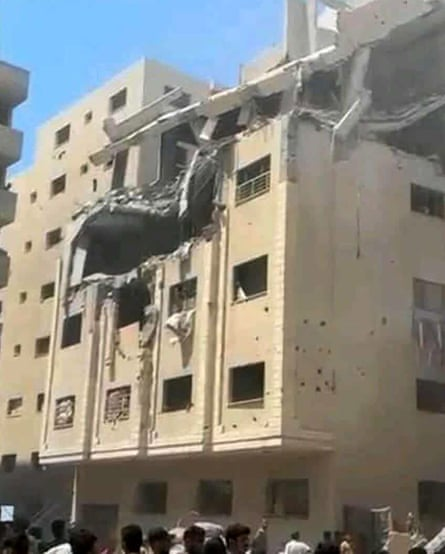

The children of Dr Marwan al-Sultan, director of Gaza’s Indonesian hospital and one of the territory’s most senior doctors, said they believed their father was deliberately targeted in the Israeli airstrike that killed him on Wednesday .
Sultan died when an Israeli missile was fired into the apartment block in Gaza City where he and his extended family were staying after their displacement from northern Gaza. His wife, daughter, sister and son-in-law were also killed in the attack.
His surviving daughter Lobna said the airstrike specifically targeted the room her father was in. “All the rooms were fine except for his, the missile hit it precisely,” she said.
His son Ahmed said there was “no other explanation” other than that his father was deliberately targeted by the Israeli military. He also added that the floors where his father and their extended family were staying were the only parts of the block hit in the airstrike.
The apartment building in Gaza City where Dr Marwan al-Sultan and several family members were reportedly killed in an Israeli airstrike
Photos and videos taken by local journalists and given to the Guardian, showed that the apartment block had been hit on the front side of the fourth and fifth floors, while the rest remained intact.
“Until the last minute of his life, he did not leave his job. He paid for this dedication with his life,” said Ahmed. “I was there only 10 minutes before the airstrike and the scene I faced when I went back to the apartment after the attack is indescribable. I didn’t know who had survived and who had died. Some people were only now shattered body parts. Most of those who died were women and children.”
He said his father’s death was not just a loss for the family but for the whole of Gaza . Sultan was an experienced cardiologist and a leading figure in Gaza’s medical community. He was also one of only two remaining heart specialists in the territory, according to Healthcare Worker Watch (HWW), a Palestinian medical organisation.
“My father was loved by all people,” said Ahmed. “He had been besieged at the Indonesian hospital and also at the Kamal Adwan hospital but he did not leave. For the first few months [of the war] we did not see him except a few hours of the day because he was always at the hospital.”
His death means that all of the directors of the hospitals in northern Gaza have either been killed or detained by the Israeli military forces.
The director of Kamal Adwan hospital, Dr Ahmed al-Kahlout, and his fellow acting director, Dr Hussam Abu Safiya, as well as Dr Ahmed Muhanna, the director of al-Awda hospital in northern Gaza, are all being held in an Israeli prison.
In a statement, the IDF said: “On Wednesday, the IDF struck a key terrorist from the Hamas terrorist organisation in the area of Gaza City. The claim that as a result of the strike uninvolved civilians were harmed is being reviewed.
“The IDF regrets any harm to uninvolved individuals and operates to mitigate harm to them as much as possible. The Hamas terrorist organisation systematically violates international law while using civilian infrastructure for terrorist activity and the civilian population as human shields. The incident is under review.”
According to data from HWW, Sultan was the 70th healthcare worker to have been killed by the Israeli military in the past 50 days. The UN says that overall more than 1,400 healthcare workers have been killed in Gaza since the beginning of the war in October 2023.
Under the Geneva conventions, the set of international laws that police the conduct of warring parties, attacks on healthcare workers during conflict could be war crimes. The conventions state that doctors and other healthcare professionals should be protected, not targeted or attacked during conflict, and must be allowed to carry on providing medical care to those who need it.